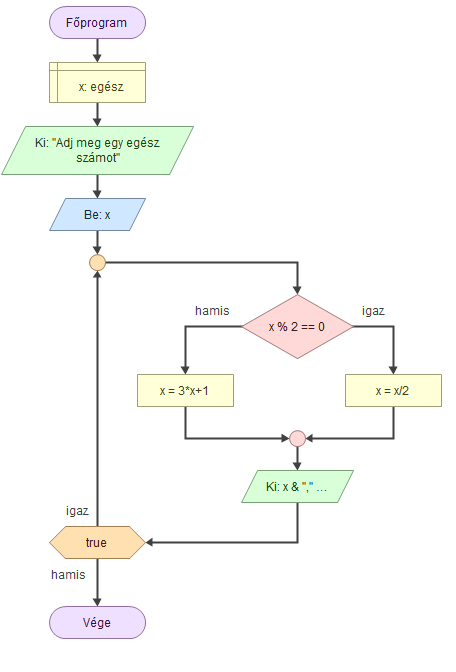

A probléma a következő: Tetszőleges pozitív egész számból kiindulva képezzünk végtelen sorozatot úgy, hogy ha a sorozat utoljára kiszámított eleme páros, akkor a rákövetkező elem ennek fele lesz, különben viszont a háromszorosánál eggyel nagyobb szám.
Például ha a 7-ből indulunk ki (amely páratlan), akkor a rákövetkező elem 3x7+1=22, amely páros, így a következő elem a 22 fele, azaz 11 lesz. Tovább folytatva a szabály alkalmazását a 7, 22, 11, 34, 17, 52, 26, 13, 40, 20, 10, 5, 16, 8, 4, 2, 1, 4, 2, 1, ... sorozatot kapjuk.
A Collatz-sejtés ábra letölthető itt:A Collatz-sejtés
Ez egy AI segítségévél készült példa!